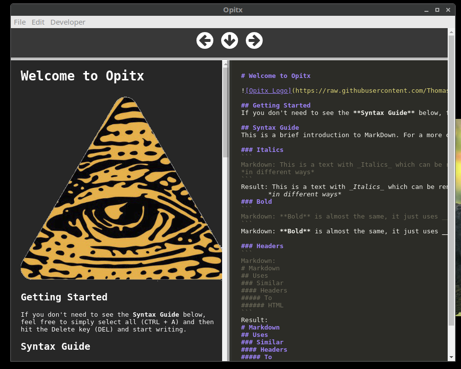

Opitx - Documentation
1. Introduction
Opitx is a Markdown Editor, built with React and Electron, that puts the user in control of their files.
Linux has many Markdown editor options, but they all have the same problem, saving.
After trying nearly every option available, there was still nothing out that enabled me to save my work in local directories without saving it in some strange string of characters meant for the backend database and not me, the user.
Only one of at least a dozen that had an integrated sync feature even worked reliably (Turtl). So instead of making due with bad options and loosing even more of my work, I decided to write my own Markdown Editor that has the features that I need integrated into it.
